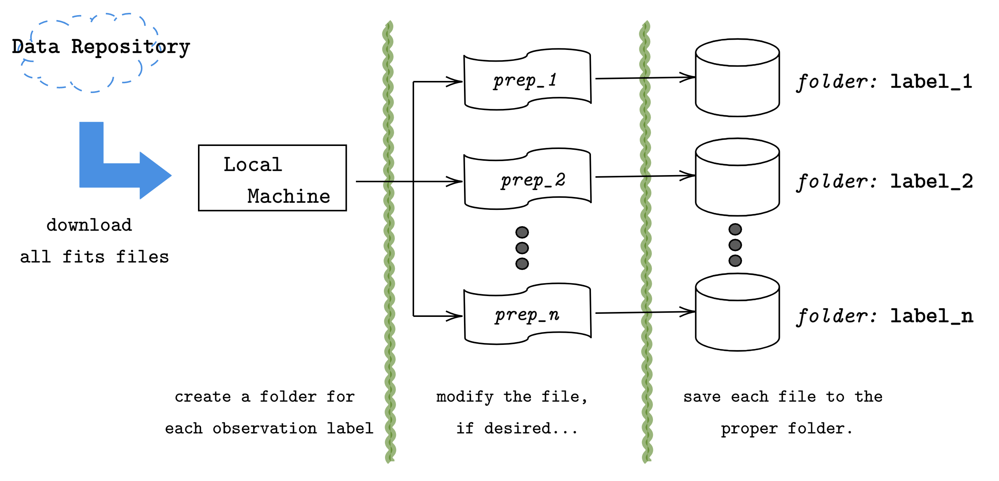

Welcome to CoRoT Contribution’s documentation!¶
Here we present the summary results and developments of the project called A Data Analysis Pipeline for the CoRoT Light Curve Data, supported by NSEE and FAPESP. The pipeline major three specific topics that will allow any user with basic knowledge in Python to reproduce the analysis.
First we will present an introduction on the CoRoT project and it’s objectives for contextualization. The problem for this research is then presented, to make it clear the objectives of this work. And after we will present the proposed pipeline in it’s major groups, as an overview of the high level steps to get from the raw collected data, to the machine learning analysis.
Finally, all steps are presented in a detailed manner, by going trough all the low level computations, with code examples. Leading the way to the final results obtained, and the final reports.
See also
This documentation is just a guide trough how one can use the provided python libraries do go from the raw data collected from the CoRoT sattelite to a simple architecture to be used on machine learning algorithms. If one also want to check other possible applications please check the GitHub repository.
Introduction to CoRoT¶
There are several methods to detect exo-planets and get information from them, as an example, there are:
Radial velocity
Transit photometry
Relativistic beaming
Gravitation microlensing
and several others.
Problem proposed¶
Beeing as concise as possible, the main goal is to use machine learning to automate the classification of CoRoT collected data, as a way to cluster data that has meaningful information to be analised from data that has none. This means that we want to classify data that present possible exo-planets, from data that has information of something other then exo-planets.
To provide a brief introduction on the knowledge needed to achieve this goal, we will describe the data set a little bit. The data set is provided by the repository provided at …, where it contains files in a .fits format. Those are actually pretty common in the astronomical whereabouts, but not for the machine learning public. In each .fits file, we will have a light curve time series for a particular CoRoT observation. All observations will have the white light intensity, some will have the RGB, but all will have the white light intensity along the obsevation time.
Those time series, are not the light intensity provided by the observed exo-planet, but actually, the light intensity emition form the star in which the suposed exo-planet is orbiting around. Notice, that we actually have the Transit photometry information for this particular exo-planet.
Therefore, we are talking about using the transit photometry time series to classify if in this particular observation there is a chance for the observation be an observation of an exo-planet, ore something else. As an ilustration, one will have time series data, that will contain the planetary transit information such in

So the features for the machine learning algorithm must be gathered from the time series, and the algorithm must reach for the probability of this observation actually be the observation of a exo-planet.
Pipeline¶
The preprocessing pipeline consists on four major steps:
Getting the data - (10%)
Reading in Python - (20%)
Feature Engineering - (50%)
Machine Leaning - (20%)
Notice
In this items, we introduced the usual percentage of the work amount usually taken for each particular part of an machine learning project. This is usually the amount when you have features that does not involve time, dynamic features… therefore static information, which is most used to happen, such as in problems of customer clustering, when one has features such
|
|
|
|
Note that this features does not change over time. Here we have time series, so we have to somehow extract from those time series, some static information. So be prepared for the feature engineering part of the pipeline!
To get the data on your local machine, first one mush address to the data repository web site where we will have the soo called level N2 processed data from the CoRoT observations. Those are the most processed versions of the CoRoT collected data. At this repository, one will find five classes of observations,
CoRoT bright: the called bright stars (examples of not exo-planets)
CoRoT targets: the called exo-planets (examples of exo-planets)
Red giants: the observations classified as red giants (examples of not exo-planets)
Stars with rotation periods from Affer (not used)
Stars with rotation periods from Medeiros (not used)
The last two classes will not interest us. We actually will only use the first three collection of data. Those collections have information of transit photometry or only light curve intensity, furthermore their labels allow us to segregate the information as not exo-planet and exo-planet. While the last two, provide labels that cannot ensure if the collected data is from an exo-planet observation or not.
If the user select one of the three categories, it will show a table with several items. Each item is a particular light curve observation, and the user can select and download any of the curves that he desires.
After downloading for the three classes (bright stars, confirmed targets and red giants) the user must keep each class in a particular folder, with the name that the user want to label each class. As schematized in the figure above.
It is advised to keep a database folder following the structure:
./database
│
├── bright_stars
│ ├── ..._1.fits
│ ├── ..._2.fits
│ ⋮ ⋮
│ └── ..._n.fits
│
├── confirmed_targets
│ ├── ..._1.fits
│ ├── ..._2.fits
│ ⋮ ⋮
│ └── ..._m.fits
│
└── red_giants
├── ..._1.fits
├── ..._2.fits
⋮ ⋮
└── ..._k.fits
Drive files access
If the user does not want to go trough the process presented above and just want to download the data, already in the format presented above, it is possible to get it from my personal google drive, or in the direct download link:
The files are something close to tens of GB. Since it contains all the raw fits files for the three classes (bright stars, red giants and confirmed targets).
Reading and Plotting
Feature Engineering